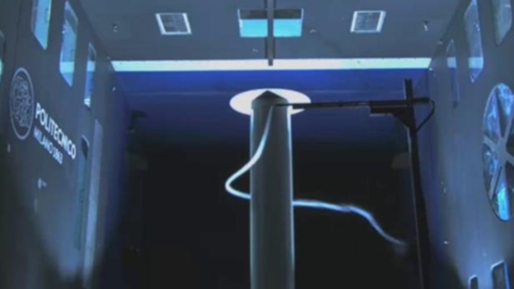
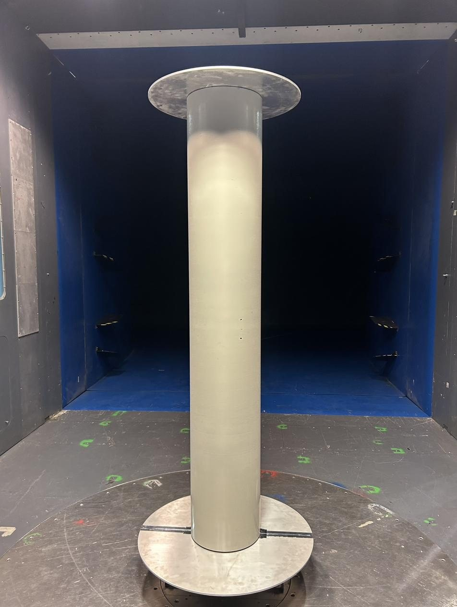
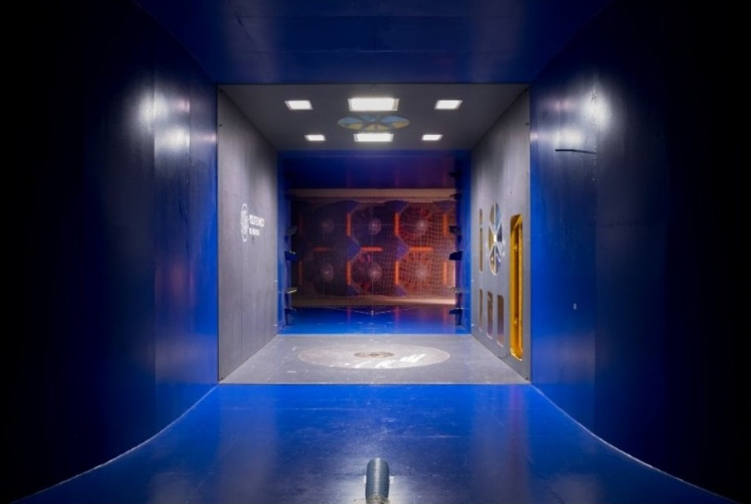
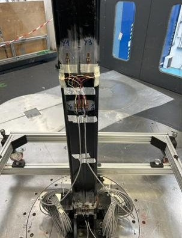
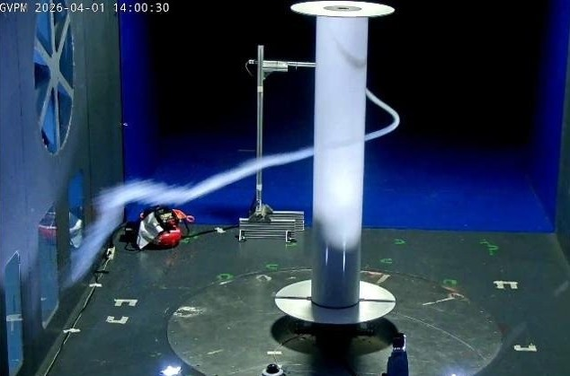
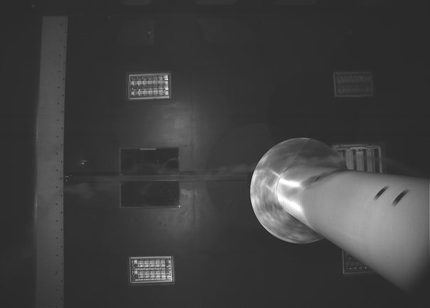
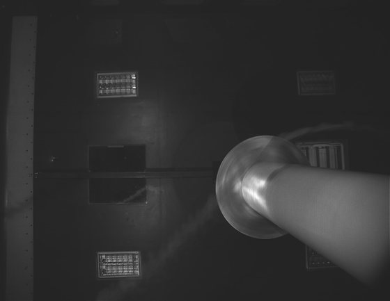
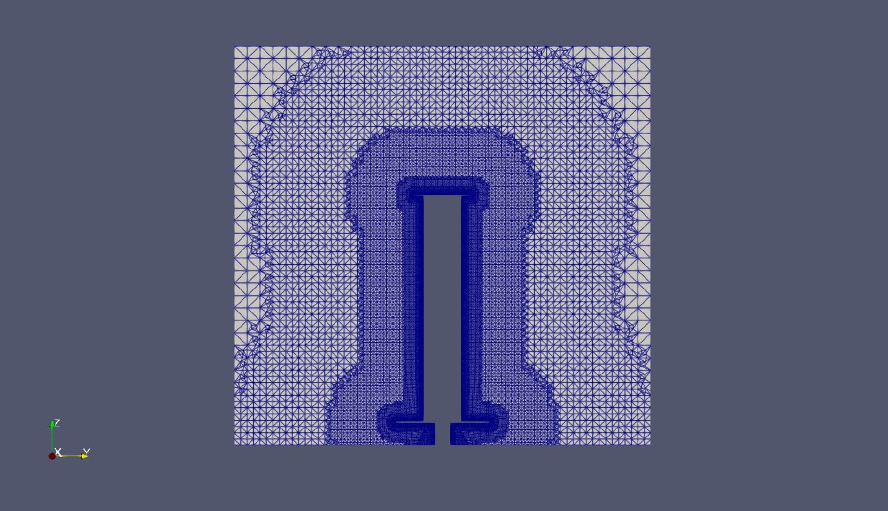
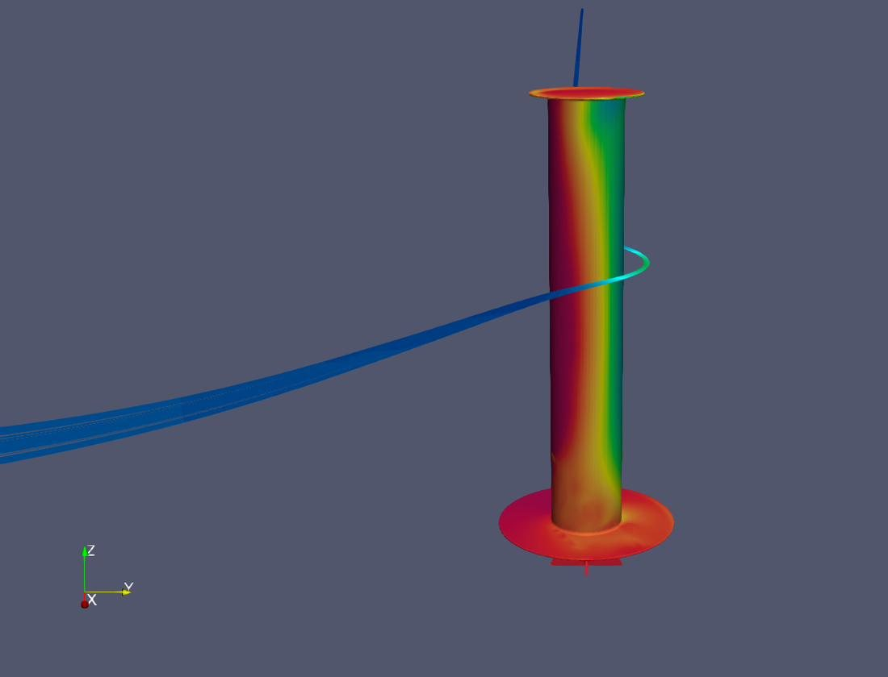

MSc Thesis · Wind tunnel + CFD · Politecnico di Milano · A.A. 2025-2026
A finite, endplated rotor tested in the wind tunnel from the critical to the supercritical Reynolds regime, and modelled in OpenFOAM to understand what model-scale data can say about full-scale rotor sails.
Overview
Rotor sails are tall rotating cylinders mounted on the deck of a ship. Spinning in the wind, they generate a force perpendicular to it through the Magnus effect, which can push the ship forward and cut fuel consumption. They are one of the most mature wind-assisted propulsion technologies.
Most wind tunnel data on rotating cylinders come either from low Reynolds numbers or from quasi-two-dimensional models without endplates. Real rotor sails are finite, wall-mounted, fitted with endplates and work at much higher Reynolds numbers.
The thesis, carried out with Riccardo Schido under the supervision of Prof. Sara Muggiasca and Ing. Stefano Giuseppe Giappino, addressed that gap with three goals: reach full-scale flow regimes in the tunnel, understand which aerodynamic behaviours carry over to full scale, and extend the experiments with CFD.

Scaled rotor model in the GVPM low-turbulence test section
Facility
GVPM wind tunnel, Politecnico di Milano
Model
1:6 scale rotor, motor-driven
Configurations
Bare tip + 3 endplate sizes
Flow regime
Critical to supercritical
Measurements
Forces · surface pressure · smoke
CFD
OpenFOAM · RANS / URANS · HPC
Post-processing
MATLAB · ParaView
Team
2 MSc students

GVPM low-turbulence test section

Strain-gauge balance on the instrumented column

Smoke released upstream of the rotor
Wind tunnel campaign
The rotor spins inside the low-turbulence test section, driven by an electric motor. An interchangeable upper disk rotates with the cylinder in four configurations, while a fixed lower disk reproduces the effect of the ship deck.
Three measurement chains ran side by side: a strain-gauge balance for lift and drag, calibrated with dead weights; a single pressure transducer on the rotor skin that sweeps the whole circumference as the rotor turns, read through a slip ring and an encoder; and smoke visualization from several viewpoints, including a high-speed camera.
Spin-ratio sweeps, Reynolds sweeps and quasi-static sweeps at very low rotation covered the test matrix. Every point was post-processed in MATLAB with repeatability and uncertainty analysis, and the pressure integration was cross-checked against the balance.
Flow visualisation
High-speed footage shows how rotation reshapes the flow: at low spin ratio the wake is wide and irregular, dominated by vortex shedding; once rotation takes over, the wake becomes narrow, deflected and almost steady.

Low spin ratio: wide, irregular wake

Higher spin ratio: narrow, deflected wake
Numerical model
A wind tunnel has limits: at the highest wind speeds the motor cannot reach the largest spin ratios, and the pressure is measured at a single height. A validated numerical model can extend the picture beyond those limits.
The rotor was simulated in OpenFOAM on the Politecnico di Milano HPC cluster, with wall-resolved meshes built in snappyHexMesh. Two turbulence closures were compared, k-ω SST and its transition extension SST-LM, after a preliminary 2D study on the static cylinder through the drag crisis.
Two domains share the same setup: an open-field domain for verification against literature and grid convergence, and a test-section domain that reproduces the tunnel walls, to compare with the experiment and quantify confinement effects.

Mesh refinement around the rotor

Surface pressure and streamlines from the CFD model
Workflow
Setup validation
Static cylinder through the drag crisis compared with literature; quasi-static rotation used to reconstruct the pressure distribution of the non-rotating rotor.
Test campaign
Spin-ratio and Reynolds sweeps for the bare tip and three endplate sizes, with forces and surface pressure acquired together.
Independent cross-check
Sectional forces from pressure integration compared with the balance measurements, plus repeatability and uncertainty analysis.
Smoke visualization
Wake topology across spin ratios, recorded from several viewpoints including a high-speed camera.
CFD verification
Grid convergence study and comparison with reference simulations in the open-field domain; choice of the turbulence closure.
CFD validation and confinement
Test-section simulations compared with forces, pressure distributions and smoke, then with the open field to isolate the effect of the tunnel walls.
Quantitative results are not published on this page.